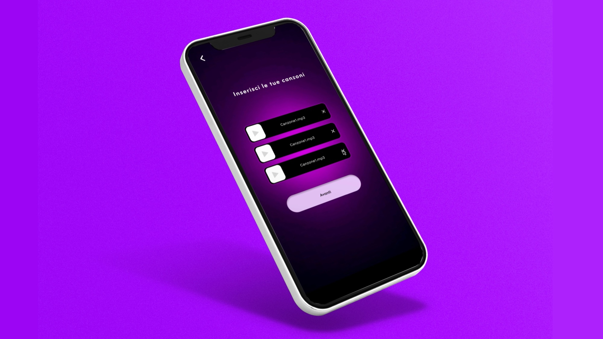
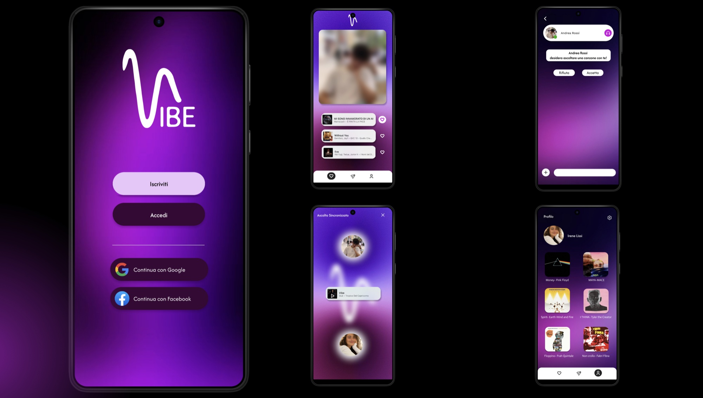

Vibe
UI UX DesignVIBE - Connect beyond appearance
VIBE nasce da una riflessione sulle moderne applicazioni di dating, spesso basate principalmente sull’impatto estetico e sulle prime impressioni. Il progetto ribalta questa logica, mettendo al centro un elemento capace di raccontare qualcosa di più profondo di una semplice immagine: la musica.
L’applicazione si basa su un sistema di matching musicale: attraverso l’inserimento delle proprie playlist e delle canzoni preferite, gli utenti possono entrare in contatto con persone che condividono gusti, generi e affinità musicali. La musica diventa così il primo punto d’incontro, uno strumento per creare connessioni che vanno oltre l’apparenza.

Il naming VIBE richiama un modo di essere, un’attitudine e uno stile di vita, sintetizzando l’idea di un’affinità che nasce dalle stesse frequenze.
L’identità visiva si sviluppa attraverso una palette composta da nero, viola e bianco, con un linguaggio digitale e contemporaneo. L’intera applicazione, dalla progettazione delle schermate alla definizione dell’esperienza utente, è stata realizzata in Figma nell’ambito di un progetto UX/UI.

Motion design
Il progetto è stato completato con un video animato, realizzato interamente da me in After Effects, per presentare l’applicazione e il suo universo visivo.